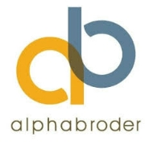

Who am I?
I am a prospective Economics major studying at Queens University. I am hoping to pursue a minor in Computer Science in order to expand my skillset and sharpen my existing coding knowledge. I am currently fluent in Python, Java, HTML, CSS and JavaScript.
Portfolio
Skills
Some of the skills I have acquired over the years include:
- Team leadership
- Documentation and reporting
- Python proficiency
- Java proficiency
- Waterfall methodology
- Agile methodology
- Excel spreadsheets
Experience

alphabroder/ (Co-op) IT Technician
February 2019 - June 2019, Richmond Hill
As an IT technician with alphabroder, I worked under the guidance of the local IT department to facilitate employees with their everyday technological needs. Some of the tasks I performed include:
Configured hardware, devices and software to set up work stations for employees
Patched software and installed new versions to eliminate security problems and protect data
Took inventory and performed cable management functions on over 3000+ cables over an exclusive local server
Recycled damaged and aging technology
Education

Queen's University, Kingston, ON / Bachelor of Arts, Economics
September 2019 - April 2023,
Pursuing a Bachelor of Arts Degree with a focus on Economics. Hoping to pursue a Minor in Computer Science. Currently a Web Developer for Qweb, Queen's exclusive web development club.
Saint Robert Catholic High School, Thornhill, ON / Ontario Secondary School Diploma
September 2015 - June 2019,
Obtained an Ontario Secondary School Diploma while qualifying for the honor roll 3 years in a row with a consistent 80%+ academic average.
Contact
Phone: 647-546-1807
Email: polobotu@gmail.com